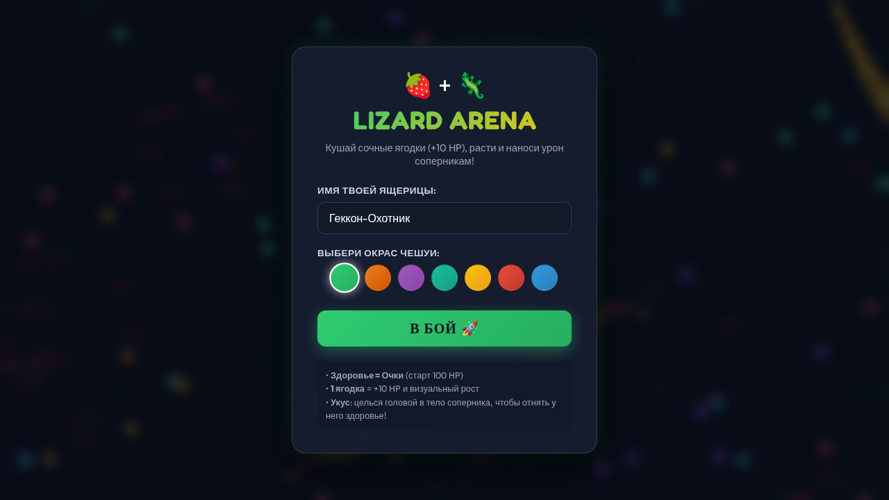
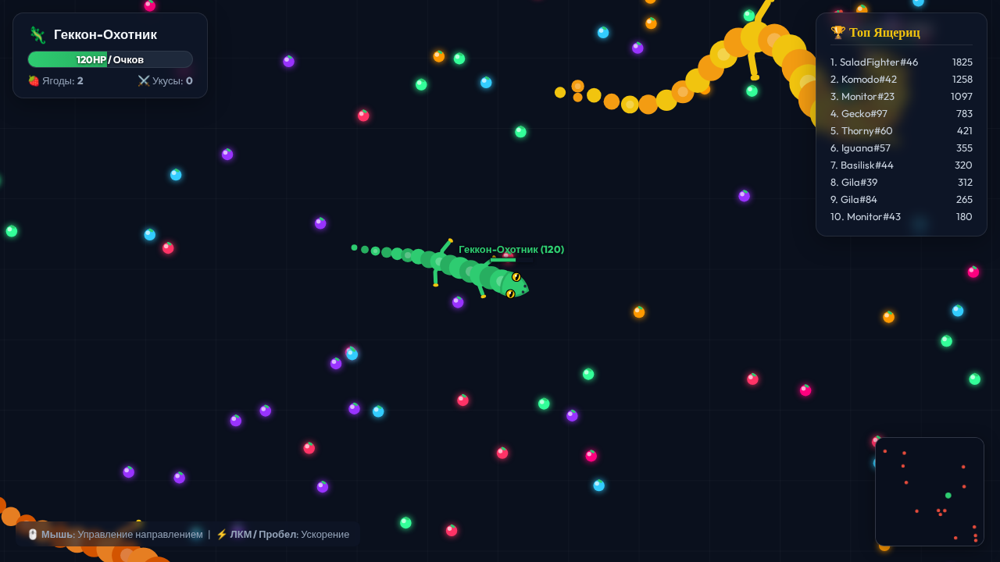

1. Архитектура и настроенная среда агента
Применение правил AGENTS.md, навыков, MCP-конфигурации и обоснование каждого подключения (5 баллов).
📜 Правила проекта (AGENTS.md & GEMINI.md)
Архитектура авторитетного сервера и физической модели процедурных ящериц:
- Здоровье = Очки: старт 100 HP, сбор ягоды +10 HP.
- Масштаб:
S = sqrt(Score / 100). - Укус: урон
D = 25 + 10*(S - 1), вампиризм+40%. - Производительность: Spatial Hash Grid с поиском O(1).
- Нулевые медиа-зависимости: процедурный звук на Web Audio API.
🧩 Подключенные Agent Skills
lizard-arena(собственный) — правила арены, формулы урона и FSM ботов.playwright-expert— паттерны браузерного E2E тестирования.websocket-engineer— синхронизация снапшотов 30 Hz.game-developer— паттерны игрового цикла Canvas 2D.
Зафиксированы в skills-lock.json.
🎯 Обоснование подключений для ревьювера
| Инструмент | Зачем подключен | Какой шаг разработки улучшил |
|---|---|---|
| AGENTS.md | Единый контракт формул и сетевого взаимодействия | Исключил рассинхрон клиента и сервера по урону и масштабу |
| Skill lizard-arena | Компактная спецификация кинематики и состояний ИИ | Позволил реализовать 3-стадийного бота без раздувания контекста |
| Skill playwright-expert | Паттерны устойчивых селекторов и авто-ожиданий | Обеспечил стабильный E2E-тест без флакующих тайм-аутов |
| Skill websocket-engineer | Сетевая синхронизация, комнаты и тикрейты | Разделил физику (60 Гц) и сетевой бродкаст (30 Гц) без перегрузки сети |
| Skill game-developer | Игровой цикл, 60+ FPS, FSM ботов и Spatial Hash Grid | Оптимизировал коллизии до O(1) и реализовал конечный автомат ботов |
| Собственный MCP | Изолированное вычисление боевого баланса и геометрии | Позволил валидировать бои без поднятия всего веб-сервера |
| Hook type-verifier | Мгновенная проверка TypeScript после каждой правки | Агент сразу исправляет ошибки типов без ожидания коммита |
2. Исследование и создание Skill (2 балла)
Разбор готовых навыков и валидация собственного скилла с проверенным результатом.
🔍 Разбор готовых skills (из каталога jeffallan)
«playwright-expert: навязывает семантические селекторы по ролям и авто-ожидания вместо хрупких CSS-классов и waitForTimeout, что кардинально снижает флакование E2E-тестов.
websocket-engineer: задает правила управления комнатами, жизненным циклом сокетов и оптимизацией снапшотов мира (30 Гц рассылка при 60 Гц физике).
game-developer: предоставил архитектуру пространственного разделения (Spatial Grid O(1)) и 3-стадийный FSM бота (FORAGE / ATTACK / FLEE) без просадок FPS».
🦎 Собственный skill: lizard-arena
Формализует процедурную анатомию ящериц, физические ограничения позвоночника Verlet и боевой баланс:
- Радиус головы:
R = 18 * S - Число звеньев тела:
N = min(42, floor(14 + (S - 1) * 12)) - Скорость перемещения:
v = 240 / S^0.2 - Кулдаун укуса:
350ms
✅ Проверенный результат запуска скрипта balance_checker:
3. Собственный MCP-сервер (2 балла)
Полноценный MCP-сервер на stdio с инструментами simulate_combat и calculate_lizard_specs.
🛠️ Устройство сервера (server/mcp/arena-mcp-server.ts)
Построен на официальном @modelcontextprotocol/sdk:
simulate_combat— моделирует урон, вампиризм, контрудар и дроп ягод.calculate_lizard_specs— рассчитывает геометрию и физику по очкам.- Транспорт: StdioServerTransport (стандартный для агентов).
- Конфигурация в
opencode.jsonиmcp_config.json.
🚀 Запуск верификатора MCP
Скрипт scripts/test_mcp.mjs подключается как MCP-клиент и тестирует:
🟢 Успешный сценарий (simulate_combat)
Вход: { attackerScore: 160, victimScore: 75, hitType: "head_to_body" }
🔴 Обработка ошибочного входа (2 кейса)
Кейс 1 (Отрицательный HP):
Кейс 2 (Некорректная геометрия):
4. Lifecycle Hooks и Unified Runner
Сквозной контроль качества: от блокировки опасных команд до мгновенной валидации TypeScript.
🛡️ Система Lifecycle Hooks
- PreToolUse (safety-guard): блокирует
rm -rf,git cleanи fork-бомбы. - PostToolUse (type-verifier): запускает
tsc --noEmitпосле изменения файлов, возвращая ошибки агенту. - PreInvocation (reminder): инжектирует правила игры в контекст перед ответом.
- OpenCode 2 Plugin:
.opencode/plugins/check-after-edit.js.
⚡ Единый раннер проверок (scripts/check.sh)
Запуск: sh scripts/check.sh
- 1. Проверка типов TypeScript (
tsc --noEmit) - 2. Сборка Vite бандла (
npm run build) - 3. Проверка математики skill (
test_balance.ts) - 4. Проверка тулов собственного MCP (
test_mcp.mjs)
✅ Лог выполнения scripts/check.sh:
5. E2E Демонстрация и Скриншоты
Автоматический Playwright-тест полного сценария геймплея и сборки очков.
📸 Стартовое меню игры
Ввод имени ящерицы, выбор цвета чешуи, подключение к WebSocket серверу (порт 3000):

📸 Игровой процесс (Lizard Arena)
Процедурная ящерица с анимированными лапами, ягоды, сбор массы (HP увеличилось со 100 до 130), миникарта:

6. Свободная рефлексия студента (1 балл)
Личные наблюдения о применении AGENTS.md, навыков, MCP-сервера и хуков в разработке.
📝 Наблюдения из reflection.md
- AGENTS.md и навыки: отлично подошли для проекта такого рода, их создание было логичной и понятной частью курса.
- MCP-сервер: наиболее практичная вещь — позволяет выполнять реальный код и валидировать баланс игры без запуска всего стека и без галлюцинирования данных.
- Опыт с хуками: концепция была новой. Базовые проверки синтаксиса и компиляции чаще решает компилятор/программист, однако хуки дают надежную гарантию автопрогона.
- Самостоятельность: проект доведён до рабочего состояния, разбор скиллов и рефлексия написаны лично студентом.